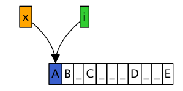
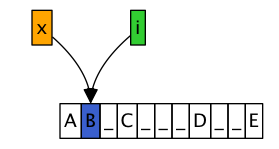
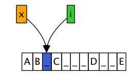
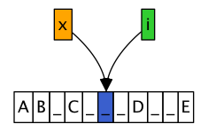
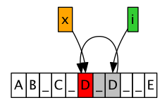
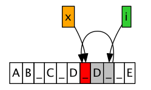
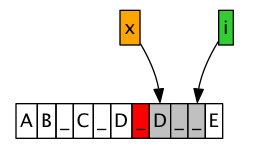
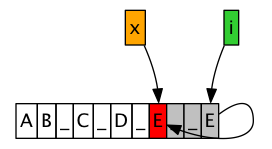
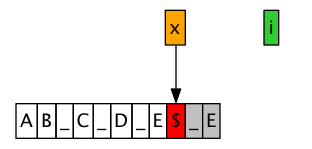

删除字符中多余的空格
题目
- 给一个字符串, 里面包含有两个或两个以上的连续空格, 要求删除多余的空格:也就是
把两个或两个以上的连续空格变成一个
Sample Input : AB_C___D__E Sample Output: AB_C_D_E
原理
- 字符串问题,由于其就是一个数组, 所以多数都有线性时间复杂度的解法
- 而且不仅仅是线性时间,很多时候,一次扫描就可以达到要求,如果解法需要多次扫描,说不定就不是最优解
- 这个题目可以用经典的"两指针"方法取解, 所谓"两指针",就是在线性的数据结构里面设置
两个指针,一个在后,一个在前:
- 前面指针之前的是还没处理的数据
- 后面指针之后的是已经处理的数据
- 两个指针之间的数据,通常来说都是没有意义的,临时数据,终究会被替换或者抛弃
- 上面所说的两指针法的详细步骤如下
- 开始的时候指针x(后指针)和i(前指针)都指向开头

- x, i同时增加, 不是空格,都继续增加

- x, i 同时指向空格, 单个空格也没关系,继续增加, 增加到"一个空格的前一个也是一个空格"的时候

- 同时增加到了"一个空格的前一个也是一个空格", 这个时候,两个指针终于要分家了, x会殿后, i会继续
往前走,找到一个不是空格的数字来填补x

- i找到了一个不再是空格的位置, 于是我们整个数组就等于去掉了两个空格, 所以我们要全体往前
移动两位一直到最后…且慢!前面说过, 两个指针的解法,两指针之间的数据是"脏数据"(图中灰色
的部分), 不要着急去写他们, 因为他们的值说不定很快就会被覆盖.

- i继续增加后,i找到一个符合项,来填充灰色地带的第一个字符, 虽然是空格替换空格,但是只是巧合.

- 因为前面x和i找到了符合项, x, i继续增加,下一个反而不符合预期,所以x留在原地, i继续增加

- 最后i到了符合前面预期的一个地方, 所以就取替换str[x]

- 最后不要忘了, str[x]就是字符串的结尾,因为后面都是"脏数据"

- 开始的时候指针x(后指针)和i(前指针)都指向开头
- 上面把算法罗列的很清楚了, 但是实际编码的时候,不是想象的那么简单, 因为什么时候应该替换
逻辑非常复杂, 而且想起来就麻烦, 于是就掉进了圈套, 要替换成一个空格的情况:
- 如果当前为空格
- 而且下一个也是空格
- 并且下下个不是空格
- 这也就是这个题目的另外一个难点: 因为应该替换的逻辑特别复杂, 我们反而应该去找什么时候不需要
替换, 在如下两种情况下,我们选择用str[i]取替换str[x](当然,当两者相同的时候,这个操作是多余的),
正常的字符串(非连续空格的情况):
- 当前不是空格
- 当前虽然是空格,但是当前的前一个不是空格
实现
- 最后的实现非常的简洁:
- 如果符合逻辑要求,那么就用str[i]替换str[x], 也就是前指针探测到的第一个合格的数据,来替换 第一个"脏数据"
- 如果不符合逻辑要求,那么就是说明当前数据是一个多空格情况, x不变, i继续往前探测非空格数据
def strip_extra_spaces(str): sl = list(str) x = 0 for i in xrange(len(sl)): if sl[i] != ' ' or i > 1 and sl[i-1] != ' ': sl[x] = sl[i] x += 1 return "".join(sl[:x]) if __name__ == '__main__': saying = "People are strange when they are stranger" print strip_extra_spaces(list(saying))